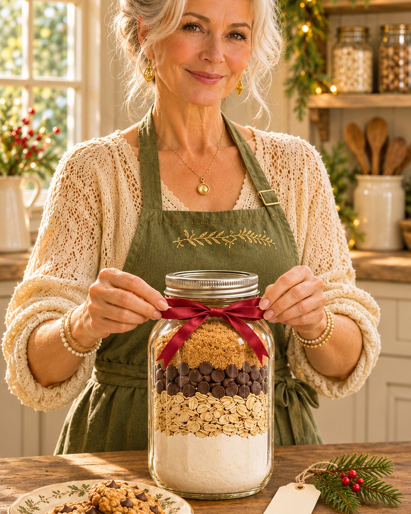

Homemade Christmas gift · 1-quart Mason jar
Grandma's Oatmeal Chocolate Chip & Cinnamon Cookies in a Jar
A homemade Christmas gift that's ready to bake. Layer the dry ingredients in a Mason jar, tie on a tag with the baking instructions, and add a red bow. Make a few extra for the pantry while you're at it.

For the jar mix
- ½ cup chocolate chips
- 1⅓ cups all-purpose flour
- ¾ teaspoon baking powder
- ½ teaspoon baking soda
- ½ teaspoon salt
- ½ cup packed light brown sugar
- ½ cup granulated sugar
- ¾ teaspoon cinnamon
- 1 cup old-fashioned oats
To bake the cookies (for the gift tag)
- ½ cup butter, melted
- 2 large eggs
- 2 teaspoons vanilla extract
How to fill the jar
- Chocolate chips first: Put the chocolate chips in the bottom of the jar.
- Flour layer: In a small bowl, stir together the flour, baking powder, baking soda and salt. Spoon it over the chocolate chips.
- Sugars: Add the brown sugar, then the granulated sugar.
- Cinnamon: Sprinkle the cinnamon over the sugar.
- Oats on top: Finish with the oats.
- Pack it down: Press each layer down firmly as you go so everything fits.
- Close it up: Put the lid on and tie on a tag with the baking instructions below.
I keep this homemade cookie mix in the pantry for 6 to 9 months, so you can make a few jars ahead.
Baking instructions (for the tag)
- In a medium bowl, stir together ½ cup melted butter, 2 large eggs and 2 teaspoons vanilla.
- Pour in the whole jar and mix until combined.
- Cover and chill the dough for at least 1 hour, or up to 2 days.
- Heat the oven to 375°F (190°C). Drop tablespoon-sized scoops of dough about 2 inches apart on a cookie sheet.
- Bake for about 8 minutes. Let the cookies cool on the tray for a couple of minutes, then move them to a wire rack to cool completely.
For oatmeal raisin cookies, use raisins instead of chocolate chips and add a little extra cinnamon and a pinch of nutmeg.
Good to know
Neat layers
A wide-mouth jar and a canning funnel (or a piece of paper rolled into a cone) keep the flour off the glass so every layer shows.
What to write on the tag
Copy the baking instructions above onto the tag, including the butter, eggs and vanilla the person will need to add.
Questions people ask
What size jar do I need for cookies in a jar?
A 1-quart (32 oz) wide-mouth Mason jar. The mix comes to about 4 cups, and the wide mouth makes it much easier to spoon in neat layers.
How long does the cookie mix keep?
I keep this homemade cookie mix in the pantry for 6 to 9 months, so you can make a few jars ahead. Store it somewhere cool and dry.
Can I make oatmeal raisin cookies instead?
Yes. Use raisins instead of the chocolate chips and add a little extra cinnamon and a pinch of nutmeg.
Find A Calm & Simple Christmas, my holiday planner with recipes, crafts and budgeting pages, here on the site.